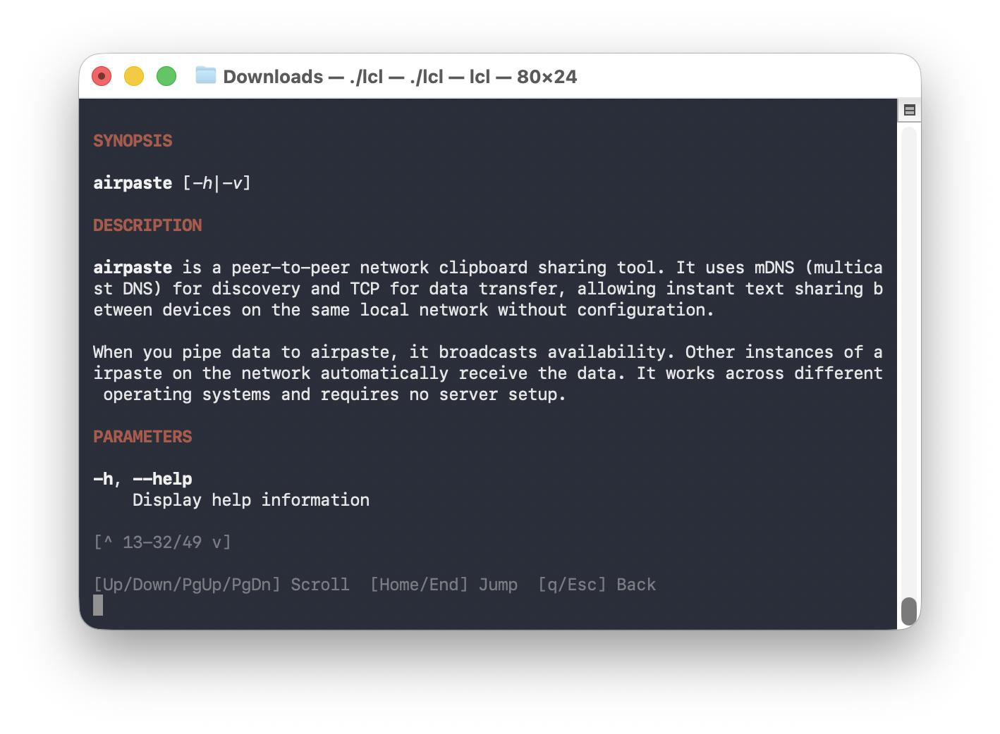

安装与初始化

01 / 环境前置依赖

Node.js ≥ 20
确保运行环境稳定，建议LTS版本
CLI 认证配置
OpenAI Codex 已完成密钥绑定
终端复用工具
tmux (Mac/Linux) 或 psmux (Win)

Git 仓库环境
项目目录需初始化为 Git 仓库
▍ 核心安装指令 $ npm install -g oh-my-codex # 全局安装 OM-CLI $ omx setup # 初始化配置 (首次必执行) $ omx doctor # 环境自检
▍ 性能模式启动 $ omx --high # 高推理模式 $ omx --xhigh # 超高模式 $ omx --madmax --high # 最强模式（算力拉满，推荐复杂任务）

极简终端交互体验 基于命令行的轻量级交互，低资源占用，高响应速度。支持动态调整推理强度，在资源消耗与智能表现之间自由切换，适应不同场景需求。